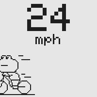
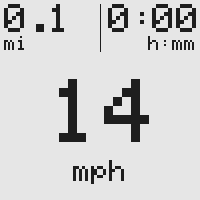
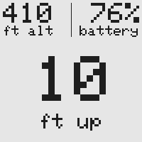
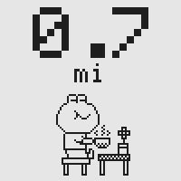
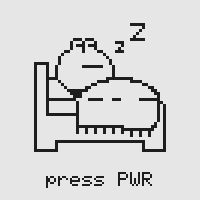

COASTER
a small e-ink bike computer

A simple bike GPS for casual rides, with Strava sync. Distraction-free, just the bare minimum. And a chill frog that rides with you.
Screens
 dashboard |
 climb |
 coffee break |
 asleep |
Parts
| Waveshare ESP32-S3 e-Paper 1.54″ | brain, 200×200 screen, two buttons, speaker |
| ATGM336H GPS + antenna | where you are and how fast |
| BMP280 barometer | how much you climbed |
| LiPo battery | power, charged over USB-C |
Build notes
| Nov 9 | Drawing a custom PCB, so it can't be wired wrong again. |
| Nov 7 | First real ride. GPS said 2,500 ft of climbing. It was 350. Climb moves to a barometer. |
| Nov 7 | Shorted on a metal café table mid-ride. The ride still saved and uploaded. |
| Nov 7 | One jumper in the wrong socket killed the barometer. |
| Nov 7 | Built the backpack: both sensors on one board that plugs straight into the device. |
| Nov 6 | First GPS fix and barometer reading, on a breadboard with jumper wires. |
| Nov 5 | First upload to Strava, straight from the device. |
| Nov 4 | The rider arrived: a frog, hand-drawn pixel by pixel by my sister. |
| Nov 2 | Started. |
Built by Paul Yakovlev, with Claude Code. Source code
Last updated November 9, 2026